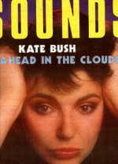

To the Reaching Out (Interviews) Table of Contents

To
the Reaching Out (Interviews) Table of Contents

(Cover
courtesy of Emmy May Lombaerts)
Date: 4-JUN-1986 13:48:44
From: SSUD3%UK.AC.SUSSEX.VAX2@AC.UK
Subject: Sounds 4th June 1986 (excerpts)
"SOUNDS" Does a total Hatchet Job on Kate - newsflash from Britain....
I just picked up the latest copy of "Sounds" (June 7 issue) which just came out today (Wednesday, June 4). At first, I was really excited when I saw that Kate was on the cover, although I was puzzled by the use of one of the most commonly available record company promo-photo of her (the one with her head resting with her palms on her temples). Then my heart sank when I saw who wrote the "article" - the Infamous Richard Cook, who interviewed her after the release of "The Dreaming" in '82, and filled the article with sarcastic and petty sniping at her (then why bother to interview her?).
Anyway, despite the "front cover status", this "article" is nothing more than an extended forum for his criticisms of Kate, with no input whatsoever from her. Although it is too long to completely transcribe (and I have a paper due tomorrow) here are the low-lights...
"Kate Bush, a teenager from a wealthy middle-class family, had art-rock waiting for her like a gift from the tooth fairy. The dinosaurs of her listening youth weren't monsters for he r. Pink Floyd, the most miserable group that ever existed (Doug's gonna LOVE this!) and the skeleton in many a pioneer's closet, provided her first archangel in the form of David Gilmour, who produced that first studio work. She would later admit her fascination with `The Wall.' It's not hard to perceive the echoes of Floyd's weary symphonies in the Bush catalogue."
On "The Kick Inside":
"The tunes sounded like the fussy little melodies one associates with musical sewing boxes. The record is a folly..."
"One can toil through Bush's work making flip comparisons all the time, but it's a search that turns over no personal vision on all these bits and pieces."
"This grain-by-grain pursuit, a quintessence of art-rock, reached overload with `The Dreaming.' IT'S A THUNDEROUSLY AWFUL LP. AFTER THE OPENING `SAT IN YOUR LAP', AN ENERGETIC HOWL ABOUT THE GETTING OF WISDOM, THE RECORD COLLAPSES INTO A SLUGGISH, ELEPHANTINE BLOW-OUT OF WORDS AND MUSIC IN SEARCH OF MEANING AND STRUCTURE. EVEN BUSH'S FAITHFUL WERE FOXED BY IT." !!!!!!
"The second side (of Hounds of Love) is a dream sequence that's about as substantial as cotton wool"
"Bush can't create anything more than a mood, a nostalgia for the resonance of art. She's like someone who flicks through the pages of a book, impatient for the pictures to come up. It has always been the way of art-rock" "Bush, like Peter Gabriel and Jim Kerr, is a mere translator. A simple soul. A show woman. She is really NO MORE PROFOUND THAN SHEENA EASTON, and you can't imagine Bush making a record that's as much fun (or vapid -ed) as "SUGAR WALLS" (this is getting funny...) or "Like a Virgin". When asked if she might be a bit strange, she says yes, she might be. I think not."
"After all, we all know `Kate', don't we? She's not strange, or barmy, or anything that's very far out of line. She just passes on her dreams; she sets art to rock.
"And somehow, we find it all fascinating. Then we knock; but she does not let us in-a-her window."
Well, that's "it" - anyone who wants to send letters, the address is
Sounds - Letters dept. Greater London House Hampstead Road London, NW1 7QZ ENGLAND tel: 01-387 6611
(Once again, the article was by Richard Cook, in the June 7 issue of Sounds. (And the article was called "The Girl [sic] With the Stars in Her Eyes").
Hugh Maher

To
the Reaching Out (Interviews) Table of Contents
"The pull and the push of it all..." - Kate Bush
Reaching Out
is a
Marvick - Hill
Willker -
Mapes
Fitzgerald-Morris
Grepel - Love-Hounds
Presentation
{kind=link}